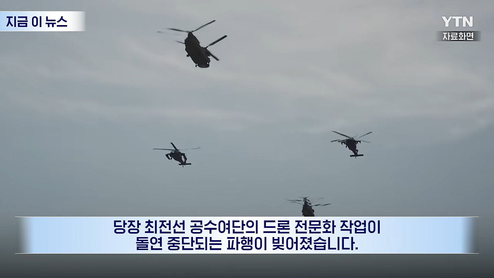
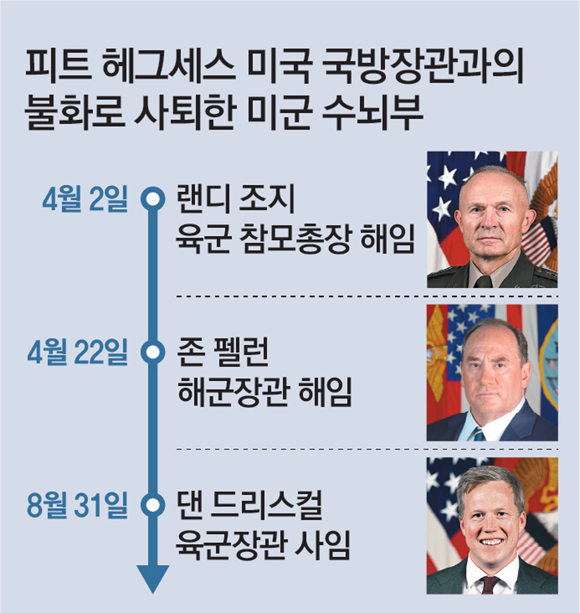

이란전쟁 발발 이후 육군참모총장, 해군장관이 연이어 해임됐는데
며칠 전 육군장관마저 사퇴하면서 전쟁 와중에 육군 수뇌부가 모두 공석이 됨
사유는 모두 헤그세스와의 불화로 알려짐
이와 별개로 헤그세스 취임 이후 현재까지 총 24명의 군 장성, 제독이 숙청됐으며
육군 내 4성 장군도 10명에서 5명으로 반토막났다고 함


이란전쟁 발발 이후 육군참모총장, 해군장관이 연이어 해임됐는데
며칠 전 육군장관마저 사퇴하면서 전쟁 와중에 육군 수뇌부가 모두 공석이 됨
사유는 모두 헤그세스와의 불화로 알려짐
이와 별개로 헤그세스 취임 이후 현재까지 총 24명의 군 장성, 제독이 숙청됐으며
육군 내 4성 장군도 10명에서 5명으로 반토막났다고 함
뭔내용임
연거푸 배틀 벌어지는 내용인듯
흔히 간과되는 사실이지만, 미국 PC WOKE 운동의 과격성은 미국의 "전통적 가치"를 수호하겠다는 이들이 역사적으로 보여 온 과격성으로부터 비롯되었다
콩도 안 심었는데 콩이 나오겠냐고ㅋ
병신짓잡자고 등신짓하고 등신짓잡자고 염병하고 염병잡자고 씹새끼짓하고 씹새끼짓...(생략)
원조 WOKE 는 지금 헤그세스가 하는짓이지 군인이 테스토스테론 수치가 낮으면 안되제!! 이러고 있는거ㅋㅋㅋ
테일후크 스캔들 같은 미군 병신짓들을 알면 저딴 소리 못함 ㅋㅋ
일부러 숙청해서 직통라인만 남기는거 아닌가
저게 중국 스파이지 ㅋㅋㅋㅋ
베네수엘라전 할때도 제독 사임함 많이
트럼프 임기동안 버틸거 아닌이상 내가 미군이면 전역할듯
중공 간첩 씹럼프가 시진핑 지령받고 간첩새끼 국방부 장관 만들었네
개드립에 괴물을 잡을려면 괴물이 되어야 한다고 지랄하는 애들이 딱 쟤같네
능력있고 자격있는 사람을 자리에 앉히는게 중요한거지
PC에만 몰두하는게 멍청한 인사인것처럼, 반PC에만 몰두하는것도 제대로 된 인사정책일리가 없는거고
제국은 내부에서 무너진다
??: 장성들을 전부 숙청했어야 했어, 스탈린 처럼!
정작 전투 한번 제대로 안 치뤄봤을거 같은데 군시절에도
쓰읍 소련이 서서히 적국 무너뜨리는방법이랑 비슷한데?
트럼프 입맛대로 해주는건데 경질할리가 없지ㅋㅋ 오히려 잘한다고 박수치고 있을듯
나라 제대로 망했네 ㅋㅋ
저런 놈이 공화당 대선 후보라는 거지..?
미국도 하나의 중국입니다
진짜 빛나던 미국은 어디갔냐
미국 vs 지구 붙어도 미국이 세번은 이길거같았던 미국인데 이젠 개병신 다 됐네
미국이란 나라는 견고한 시스템으로 굴러가서 절대 안 망한다더니만
단 한 사람이 시스템을 무너뜨리는 게 가능했구나.. 경이로울 지경이네
잘하고 있네 더해라
리버스 참수작전 ㄷㄷㄷ
국방부 장관 밑에 군별로 장관이 또 있네
PC쟁이vs예수쟁이 이지선다
외세가 아닌 내부의 적에게 완패 당하는구나
능력도 없는 소령따리가 트럼프 똥꼬 잘빨아서 장관됞케이스라
원 배틀 애프터 어나더 실사판으로 가는 듯